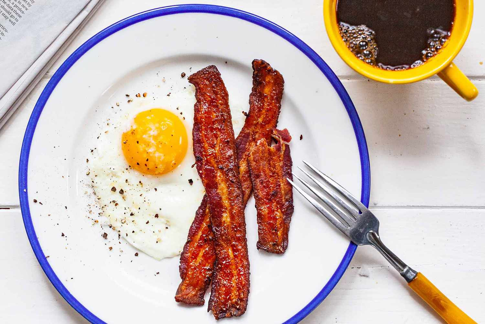

Bacon and Eggs

Description
Eggs and bacon are meant to go together. Together, they are the foundation of the best meal of the day: Breakfast. There are plenty of different ways to cook these and bring them together. This is my go-to breakfast combo.
Ingredients
- 4 slices bacon
- 2 large eggs
- 1/2 Tbsp. butter
- salt and pepper
Steps
- Heat medium castiron skillet over medium-high
- Once hot place bacon slices onto skillet and turn heat to medium.
- Cook, flipping regularly, until desired readiness, 8 to 15 minutes.
- Move bacon to plate and pat with paper towels to remove grease.
- Pour out some of the skillet grease into a disposable container, keeping enough to barely cover the bottom of the skillet.
- Crack eggs directly into skillet.
- Cook to desired readiness, 3-5 minutes on both sides.
- Sprinkle with salt and pepper to taste.
- Serve hot.
Home